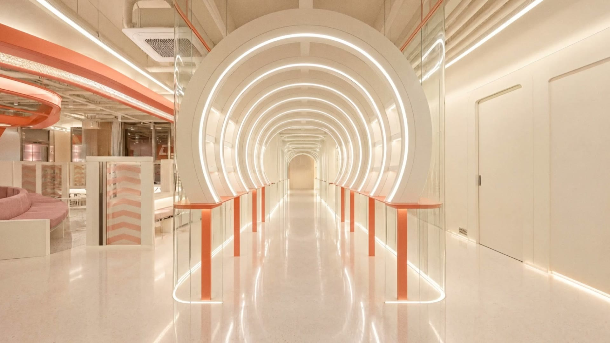
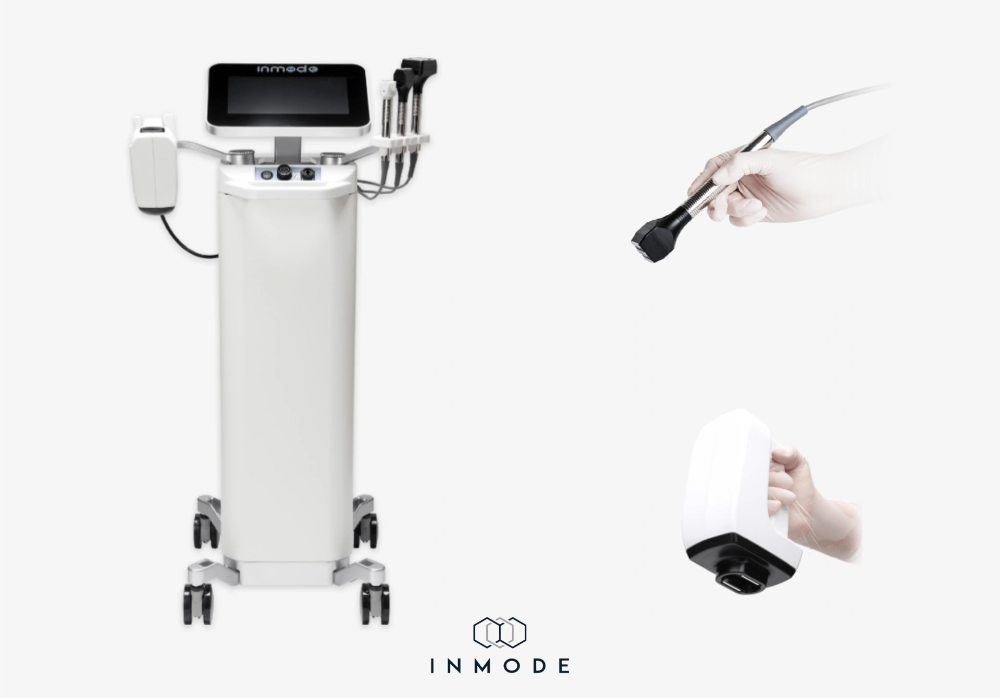
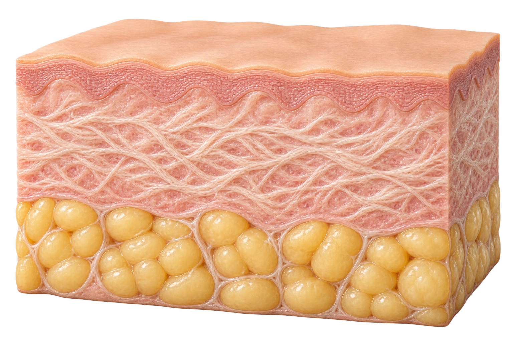
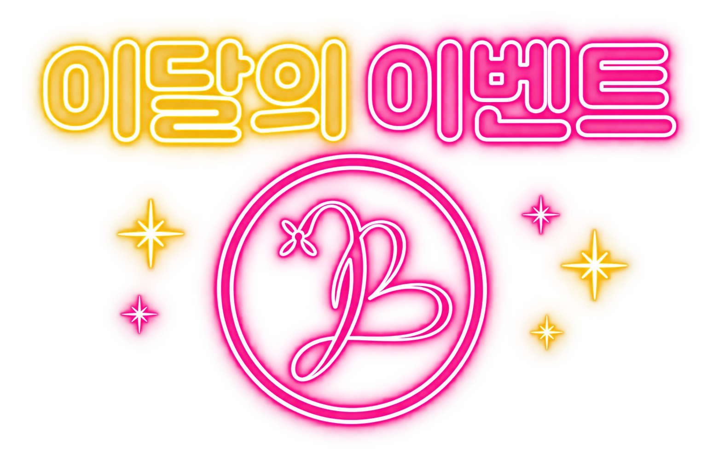
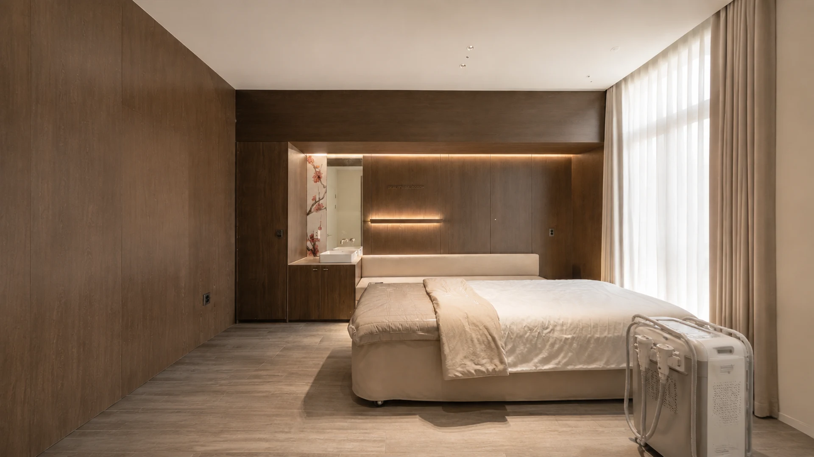

01 · CONTOUR
MiniFX
턱밑과 작은 부위의 윤곽 고민
진공흡입으로 피부를 잡아주면서 고주파 에너지를 전달합니다. 지방 분포와 피부 상태를 함께 보고 적용 부위를 정합니다.
- 살펴보는 고민
- 턱밑 볼륨 · 페이스라인
- 상담 시 확인
- 지방의 양 · 피부 두께 · 처짐 정도

Find your
balance.
턱밑의 볼륨과 피부의 탄력 저하는
비슷해 보여도 살펴볼 지점이 다릅니다.
뷰티블라썸은 얼굴의 지방 분포와
피부 상태를 함께 확인한 뒤,
필요한 인모드 핸드피스를 선택합니다.

YOUR LINE. YOUR BALANCE.

RADIOFREQUENCY CARE
인모드는 고주파 에너지를 이용하는 장비입니다. 같은 장비에서도 사용하는 핸드피스에 따라 접근하는 부위와 목적이 달라집니다.
MiniFX는 작은 부위의 윤곽을, Forma는 피부 탄력 관리를 중심으로 살펴봅니다.
Two approaches.
이름보다 중요한 것은 내 얼굴에 필요한 관리입니다.
01 · CONTOUR
턱밑과 작은 부위의 윤곽 고민
진공흡입으로 피부를 잡아주면서 고주파 에너지를 전달합니다. 지방 분포와 피부 상태를 함께 보고 적용 부위를 정합니다.
02 · FIRMNESS
피부 탄력과 부드러운 라인 관리
피부에 밀착한 핸드피스를 움직이며 고주파 열에너지를 전달합니다. 온도 피드백을 확인하며 피부 탄력 관리를 돕습니다.
Energy, with purpose.

접촉면 모식도이해를 돕는 모식도 · 실제 조직의 크기와 시술 결과를 나타내지 않습니다.
CONTACT · HEAT · FEEDBACK
고주파로 피부에 열에너지를 전달해 콜라겐을 포함한 피부 탄력 구조를 자극합니다. 접촉 부위의 온도 반응을 확인하며 진행합니다.
VACUUM · RF · PULSE
진공흡입과 고주파·고전압 펄스를 이용하는 방식입니다. 턱밑 등 작은 부위의 지방과 피부 상태에 맞춰 윤곽 관리를 계획합니다.
적용 부위와 강도는 진료 후 결정하며, 피부 반응과 기대할 수 있는 변화에는 개인차가 있습니다.
지방 분포와 피부 두께를 함께 확인
선택한 부위의 상담 포인트Your face,
your plan.
같은 턱선 고민도 원인은 다를 수 있습니다.
부위를 선택해 상담 포인트를 살펴보세요.
얼굴의 볼륨이 적거나 피부가 얇은 부위는 특히 세심한 상담이 필요합니다. 개인 상태에 따라 다른 관리가 제안될 수 있습니다.
Care, step by step.
신경 쓰이는 부위와 기존 시술 이력, 피부의 민감도를 함께 확인합니다.
지방 분포와 탄력 상태에 따라 MiniFX·Forma의 필요 여부와 적용 부위를 정합니다.
피부 반응과 느껴지는 열감·흡입감을 확인하면서 시술합니다.
시술 후 피부 상태를 확인하고 나에게 맞는 관리 방법을 안내합니다.
Back to
your rhythm.
작은 변화도 편안하게 살펴볼 수 있도록
피부 반응과 관리 방법을 안내합니다.
열감·붉음·붓기나 흡입 부위의 자국·멍이 나타날 수 있으며 회복 양상에는 개인차가 있습니다.
시술 부위를 세게 문지르지 않고, 세안·화장·운동 등 일상 관리는 피부 상태에 따른 안내를 따라주세요.
피부가 건조해지지 않도록 관리하고 자외선 차단을 챙겨주세요. 불편함이 지속되면 병원으로 문의해주세요.
Q&A
시술 전 자주 궁금해하시는
내용을 모았습니다.
고주파 에너지를 이용하는 관리입니다. MiniFX·Forma 등 핸드피스별 특성이 달라, 얼굴의 지방 분포와 피부 탄력 상태를 살펴 시술을 계획합니다.
모든 분께 같은 구성이 필요한 것은 아닙니다. 윤곽과 탄력 중 어떤 고민이 큰지, 지방과 피부 상태가 어떤지 확인한 뒤 필요한 핸드피스를 선택합니다.
턱밑의 모습에는 지방뿐 아니라 피부의 처짐, 골격 등 여러 요소가 영향을 줍니다. 원인을 살펴 인모드가 적합한지 먼저 상담합니다.
고주파의 따뜻한 열감이 느껴질 수 있고, MiniFX는 피부를 당기는 흡입감이 동반될 수 있습니다. 느껴지는 정도를 의료진에게 말씀해주시면 피부 반응을 함께 확인합니다.
부위의 범위와 핸드피스 구성, 피부 상태에 따라 달라집니다. 진료 상담에서 예상 소요 시간과 횟수·간격을 안내합니다.
피부 반응에 따라 다릅니다. 붉음·붓기·멍이나 흡입 자국이 생길 수 있으므로 중요한 일정이 있다면 미리 알려주시고, 회복과 관리 안내를 확인해주세요.
함께 계획할 수 있지만 모든 조합이 필요한 것은 아닙니다. 이전 시술과 현재 피부 상태를 확인하고, 시술별 목적과 순서·간격을 상담합니다.
현재의 피부 불편감과 건강 상태, 복용 중인 약, 최근 받은 시술을 알려주세요. 진료 후 시술 가능 여부와 필요한 주의사항을 안내합니다.
합정역 3번 출구 인근에 있습니다. 아래 상담 채널로 문의해주시면 예약과 방문 방법을 안내해드립니다.

나에게 맞는 이벤트를 펼쳐보세요.

A moment for yourself.
홍대·합정 뷰티블라썸의원
피부 고민과 지금까지 받은 시술을 함께 알려주세요.